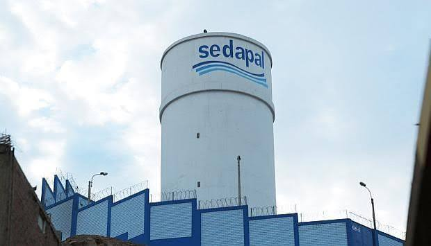
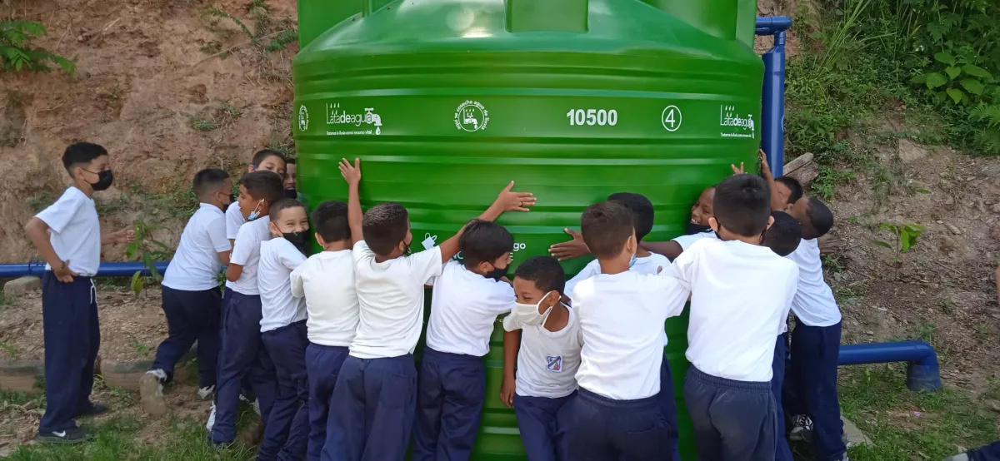

Huella hídrica
Conoce tu consumo diario mediante formularios y recibe recomendaciones de ahorro personalizadas.
Ver másWaterStats · ODS 6
Mapeamos fuentes de agua, medimos tu huella hídrica y educamos a las comunidades del Perú.
Conoce nuestros serviciosGarantizar la disponibilidad de agua y su gestión sostenible es un derecho fundamental. Creamos este espacio para conectar a las personas con fuentes de agua pública y privada seguras en todo el territorio peruano.
En muchas zonas urbanas y rurales del Perú, el acceso a agua potable segura es un desafío diario. Facilitamos mapas y ubicaciones claras para reducir la vulnerabilidad frente a cortes, emergencias o escasez hídrica.
Mapeamos tanto pilones y redes públicas municipales como estaciones y establecimientos privados aliados que comparten el acceso solidario al agua para recarga y consumo responsable.

Nuestros servicios
Conoce tu consumo diario mediante formularios y recibe recomendaciones de ahorro personalizadas.
Ver másEncuentra y reporta puntos cercanos donde se brinda agua potable a la comunidad.
Ver másDescubre métodos de ahorro de agua en el día a día y participa en nuestros talleres.
Ver recursosHerramientas y participación
Elige una opción para conocer más sobre nuestras herramientas digitales y proyectos comunitarios.
Selecciona una de nuestras iniciativas principales. Contribuye al cuidado del agua y al cumplimiento del ODS 6.
Iniciativas actuales
Plataforma interactiva para ubicar, verificar y reportar fuentes de agua potable en tiempo real.
Medimos tu impacto hídrico y te damos pasos clave para reducir tu consumo diario.
Educamos y concientizamos sobre el cuidado vital del agua y el saneamiento.



"El acceso al agua limpia y al saneamiento es un derecho humano fundamental. Calcular y reducir nuestra huella hídrica es el primer paso para preservar este recurso vital."
— Red de la Huella Hídrica
Participa con nosotros
Déjanos tus datos para enviarte más información sobre el cuidado del agua, sumarte a nuestros talleres o participar en el mapeo comunitario.
Cada gota cuenta. Únete a WaterStats para proteger este recurso vital.